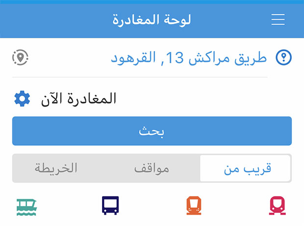

يمكنك إدخال المواقع باستخدام ما يلي:
- الموقع - أدطة الحافلات أو اسم موقع مميز
- البحث باستخدام موقعك الحالي
- وصول - حدد تاريخ ووقت البحث
- ارع والاتجاه نحو محطة الوصول
- لنقل - حدد تاريخ ووقت البحث
- من المحطات بالقرب من موقعك
- أو المواقع المميزة السابقة
- ط التوقف أو المواقع المميزة
